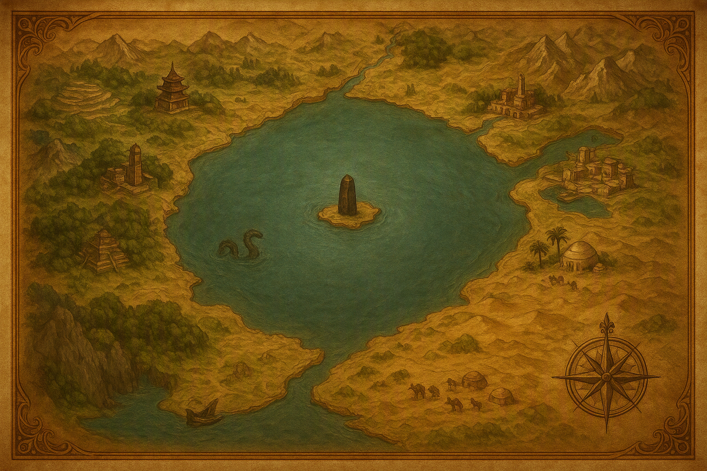
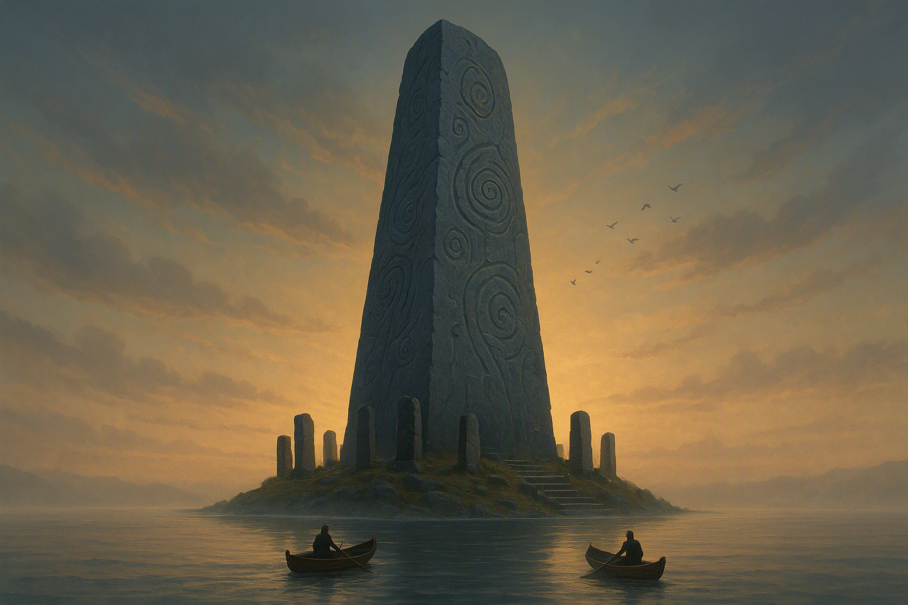
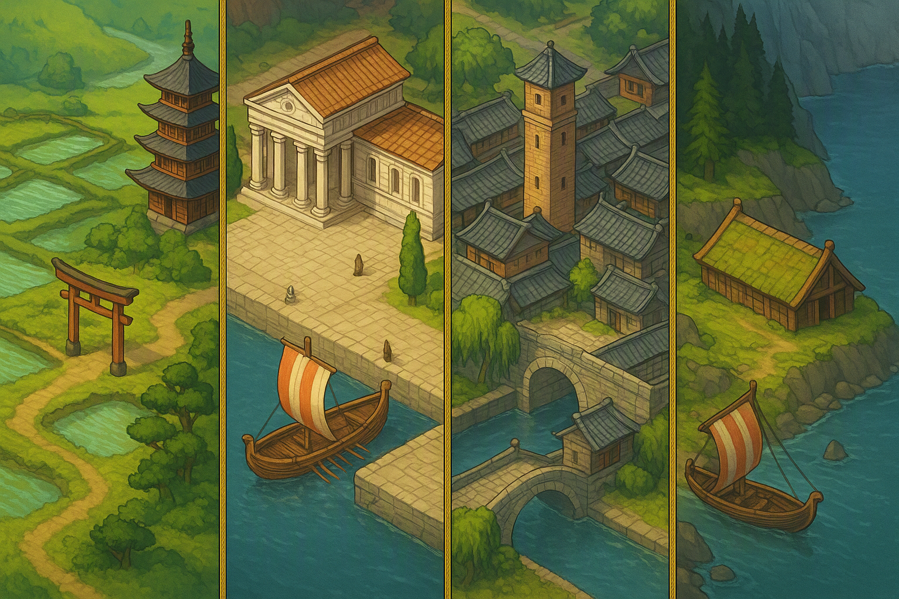
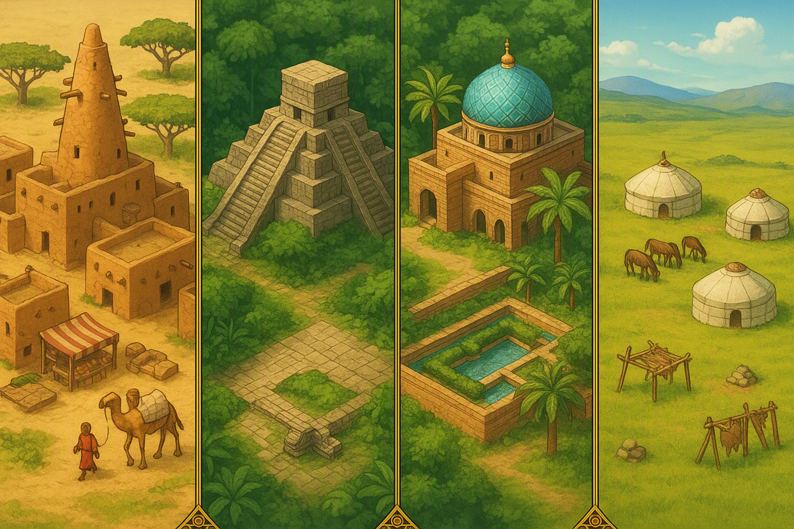
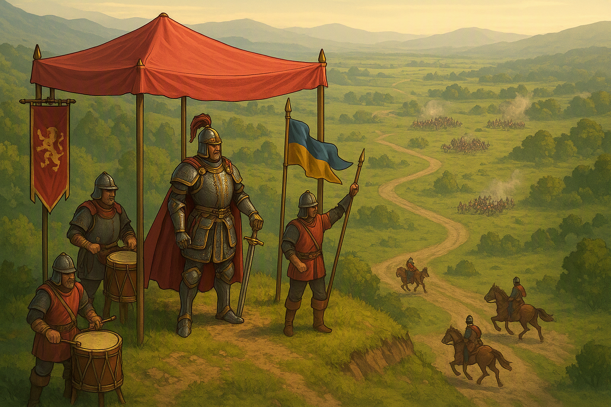
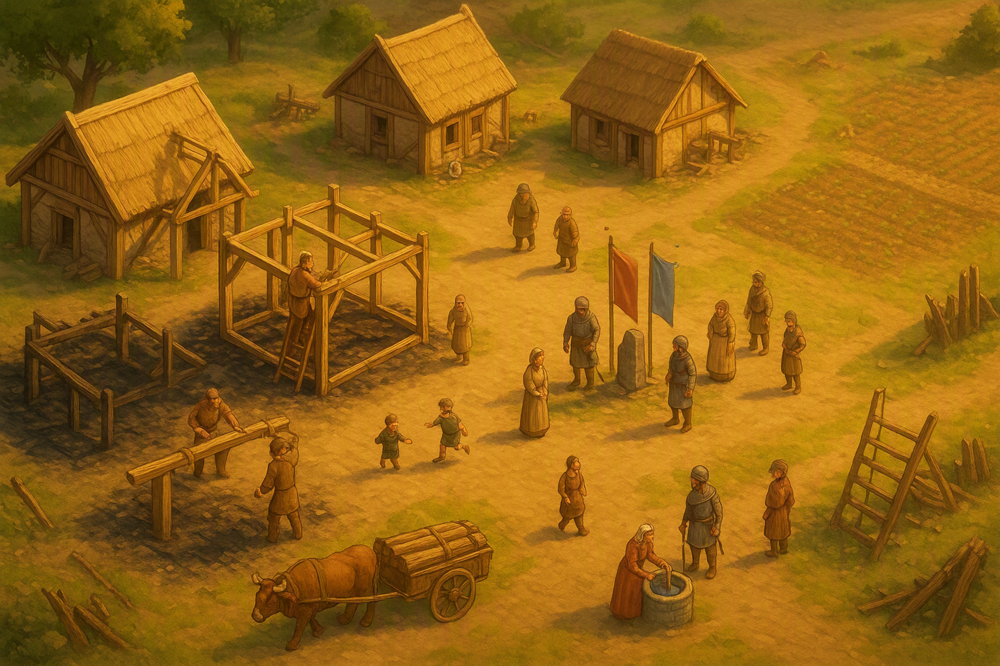

一つの海を、
八つの文明が囲んでいる。
東に稲田、南に列柱の港、西に密林の神殿、北に氷の崖。 本来なら互いを知らずに終わったはずの八つの文明が、同じ内海の岸辺で同時代に生きている ―― この世界の嘘は、それひとつだけです。あとはすべて、人が土地に合わせて生きた結果として組み立てています。

大陸のただ中に、一つの巨大な内海がある。名を 環海（かんかい）。 外洋とはつながっておらず、潮の満ち引きもほとんどない。荒れる日が少ないため、 この世界では海路のほうが陸路より速く、安全です。
山脈と砂漠と密林に隔てられた八つの土地は、陸を行けば片道で一年かかる。 ところが海を渡れば十日で着く。だから八国は、陸で背を向け合ったまま、海の上でだけ隣人になりました。 交易も、使節も、そして戦も、すべて岸から始まります。
| 方位 | 土地の名 | 文明 | 風土 |
|---|---|---|---|
| 東 | 穂群の野（ほむらのの） | ヤマト | 川が幾筋も走る沖積平野。水が豊かで、米がよく実る。 |
| 南東 | 水閘（すいこう） | 唐 | 運河で結ばれた城壁都市の群れ。人口が多く、職人が多い。 |
| 南 | 白石海岸（しろいしかいがん） | ローマ | 石灰岩の半島と天然の良港。畑は貧しく、海と石で食う。 |
| 南西 | 塩街道（しおかいどう） | マリ | 疎林のサバンナ。岩塩と砂金の産地で、隊商が絶えない。 |
| 西 | 翠壁（すいへき） | アステカ | 湿った密林の台地。石材と労働力は潤沢、鉄が出ない。 |
| 北西 | 泉都（せんと） | ペルシア | 砂漠に点在するオアシス。地下水路で水を引き、庭を作る。 |
| 北 | 北崖（きたがけ） | ヴァイキング | 切り立ったフィヨルドと針葉樹林。耕地が絶望的に狭い。 |
| 北東 | 風原（かざはら） | モンゴル | 果てのない草原。城を持たず、群れとともに動く。 |

環海のちょうど中央に小さな島があり、そこに高さ数十丈の石柱が一本だけ立っています。 八国はこれを 碑（いしぶみ） と呼びます。
表面はびっしりと渦巻きと溝で埋まっています。文字のようで、しかしどの国の文字でもない。 ただ、何百年もかけて少しずつ「読める」ようになってきたという点だけは、八国すべてが認めています。
碑の下段からは暦が読めました。中段からは重さと長さの規則、そして鉱石から金属を取り出す手順が読めました。 上段はまだ半分も読めていません。
「技術がなぜ進歩するのか」をゲーム内の出来事として説明するための装置です。 本作の 時代進化＝碑の解読が一段進んだこと と定義しています。 八国が同じ時代に同じ水準の技術を持っている理由にもなり、勝敗と関係なく世界が前に進む理由にもなります。
碑がどこまで読めているかで、世は四つに分けられます。ゲーム中の 1 試合は、この四つを 30 分で駆け抜ける縮図です。
| 世 | 碑から読めたもの | 八国の暮らし | 戦のかたち |
|---|---|---|---|
| 黎明の世 | 何も読めない。渦は模様だと思われている。 | 八国は互いの存在を知らない。海は「渡れないもの」。 | 獣と、隣の谷の一族との小競り合いだけ。 |
| 青銅の世 | 暦。星と季節の巡り。 | 種を撒く日が決まり、余剰が出る。船が海に出て、八国が初めて出会う。 | 交易の権利をめぐる衝突。戦線はまだ一つ。 |
| 鉄器の世 | 度量衡と、鉱石から鉄を取る手順。 | 領地が測られ、諸侯に分けられる。分権的な軍制が固まる。 | 戦線が複数に割れはじめる。ここから「令」が要る。 |
| 帝国の世 | 上段の「火の条」。硝石と火薬。 | 城が石から星形の要塞へ。八国すべてが碑の島に艦を並べる。 | 総力戦。決着は攻城戦でつく。 |
八国の性格は、思想からではなく 土地から 決めています。 水が余る土地は人を増やし、耕地がない土地は船を出し、鉄が出ない土地は石と人数で戦う。 ゲーム上の固有ボーナスは、すべてこの理屈の帰結です。


| 文明 | 土地の事情 | そこから出た気質 | ゲーム上の現れ |
|---|---|---|---|
| ヤマト | 水が豊富で米が余る。ただし平野が狭く、逃げ場がない。 | 土地を捨てられないので、守り抜く作法が発達した。 | 農地の食料収集が速い／固有令「陣立て」 |
| ローマ | 畑が貧しく、石と港だけがある。 | 他所から運んでくる技術＝道と船と規格を極めた。 | 街道の建設コスト半減／固有令「方陣」 |
| 唐 | 人口が多く、職人が多い。土地は肥えている。 | 人を数えて割り振る官僚制。記録を残すことに執着する。 | 技術研究が安い／固有令「火計」 |
| ヴァイキング | 耕地がほぼない。冬が長い。木材は無限にある。 | 足りないものは海の向こうから取ってくる、と割り切った。 | 船と伐採が強化／固有令「上陸」 |
| マリ | 岩塩と砂金が採れるが、水が遠い。 | 戦うより買う。金で人を動かすことを覚えた。 | 金の採掘量が多い／固有令「交易」 |
| アステカ | 石材と人手は潤沢。鉄がまったく出ない。 | 刃を石で作り、数と勇気で埋める戦い方になった。 | 村人の建設が速い／固有令「奉納」 |
| ペルシア | 水は地下にしかない。掘り当てた者が富む。 | 大きな投資で大きく返す。初手から重く出る。 | 開始資源が多い／固有令「圧壊」 |
| モンゴル | 草はどこにでもあり、城を建てる石がない。 | 守るべき場所を持たない。留まらないことが強さになった。 | 騎兵の生産が速い／固有令「遊撃」 |
本作の中核システム「戦域指令」は、遊びやすさのための仕掛けである以前に、 この世界の軍隊がそういう作りになっているから そうなっています。

鉄器の世に領地が測られて以来、土地は諸侯 ―― 氏族、都市、部族 ―― に分けられました。 兵はそれぞれの旗のもとに集まり、それぞれの判断で動きます。総大将が持っているのは指揮権ではなく、 方針を配る権利 だけです。
本陣は丘の上から動きません。命令は 旗鼓（きこ） ―― 色旗と大太鼓の組み合わせ ―― で近くの戦線に、遠い戦線には騎馬の伝令で届きます。 届くまでに時間がかかり、細部は必ず伝わりません。
戦線ごとに渡せるのは、短くて誤解のない方針が一つだけ。押せ、守れ、囲め、奪え、築け、退け。 これが 令（れい／Taktika） です。 ゲーム中の作戦カードは、この令をそのまま置き換えたものです。
つまりプレイヤーが「全部の部隊を直接操作できない」のは制限ではなく、 この世界の総大将が置かれている状況そのものです。 タイトルの Multi-Taktika は「複数の令を同時に運用すること」を指します。
八国は互いを敵とみなしていますが、いくつかの掟だけは共有しています。 誰かが定めたのではなく、破った国が例外なく次の代で滅びかけたという経験の集積です。
一
八国の艦が同じ島に並んでも、そこでは刃を抜かない。読み進められなくなれば、全員が損をするからです。
二
水を殺せばその土地は数十年使えません。奪った土地を使えなくする戦い方は、愚か者の戦い方とされます。
三
収穫は焼いてよい。しかし翌年の種は残す。次の年を殺すと、飢えるのは結局こちらでもあるからです。
四
収穫期の四十日は兵を出しません。この間に使節が行き交い、多くの戦がここで終わります。
五
旗を巻いた城の非戦闘員には道を空けます。抵抗を無意味にするための実利的な取り決めです。
破ったとき
掟破りは神罰ではなく、諸侯の離反として返ってきます。 渡した令に従わない旗が出てくる ―― この世界で最も恐ろしい罰です。

負けた国は、消えません。旗を巻いて、勝者に令を差し出します。
これを 服属（ふくぞく） といいます。 土地も民も王家もそのまま残り、ただ戦のときに誰の令で動くかだけが変わる。 八国の数が数百年ずっと八つのままなのは、この作法があるからです。
そして服属は永久ではありません。次の代、次の世で、旗を戻した国はいくつもあります。 だからこの世界の物語は、負けたところで終わりません。
ゲーム側との対応：キャンペーンでミッションに失敗してもゲームオーバーにはならず、 服属した状態から始まる「立場の悪いルート」へ分岐します。そこで勝てば旗を戻して本線に復帰できます。
| 環海（かんかい） | 大陸中央の巨大な内海。八国はすべてこの海に面する。外洋とはつながっていない。 |
|---|---|
| 碑（いしぶみ） | 環海中央の島に立つ石柱。解読が進むごとに世が改まる。作者不明。 |
| 八国（はっこく） | 環海を囲む八つの文明の総称。数は数百年変わっていない。 |
| 令（れい） | 総大将が一つの戦線に渡す方針。短く、誤解のない一語で表される。ゲーム上の作戦カード。 |
| 旗鼓（きこ） | 色旗と大太鼓による命令伝達。届く範囲が限られるため、遠方には伝令を出す。 |
| 戦域（せんいき） | 一つの令で動く戦場の単位。同時に最大六つまで立つ。 |
| 休戦の季（きゅうせんのき） | 収穫期の四十日。兵を出さない。多くの和議がこの間に成立する。 |
| 服属（ふくぞく） | 敗者が旗を巻き、勝者の令に従うこと。滅亡ではなく、解除もありうる。 |
※ 掲載している画像はすべて世界観を伝えるためのイメージで、実装中の画面ではありません。